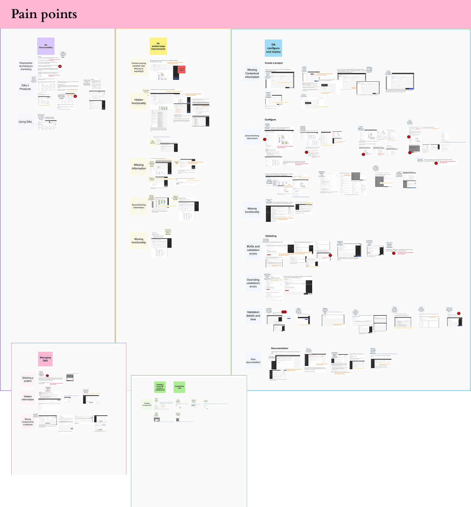
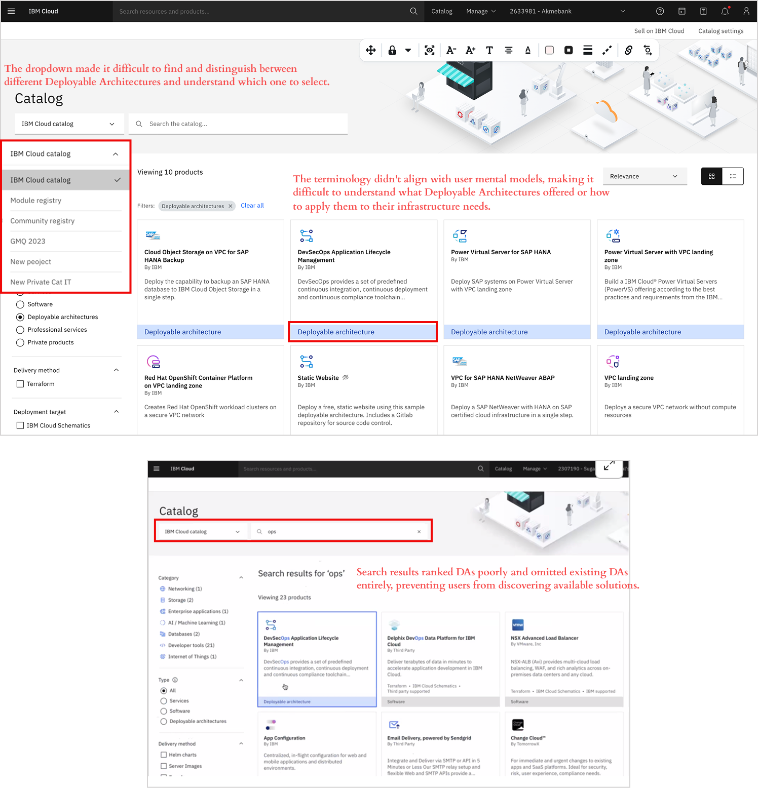
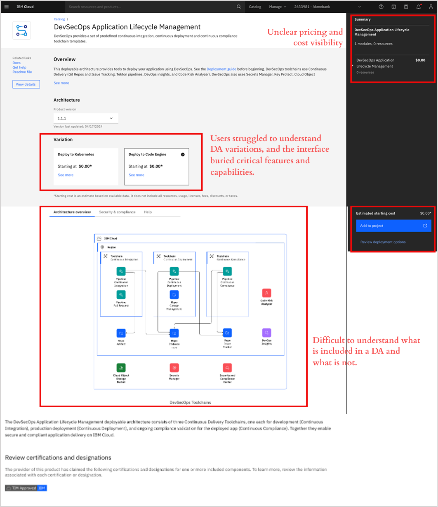
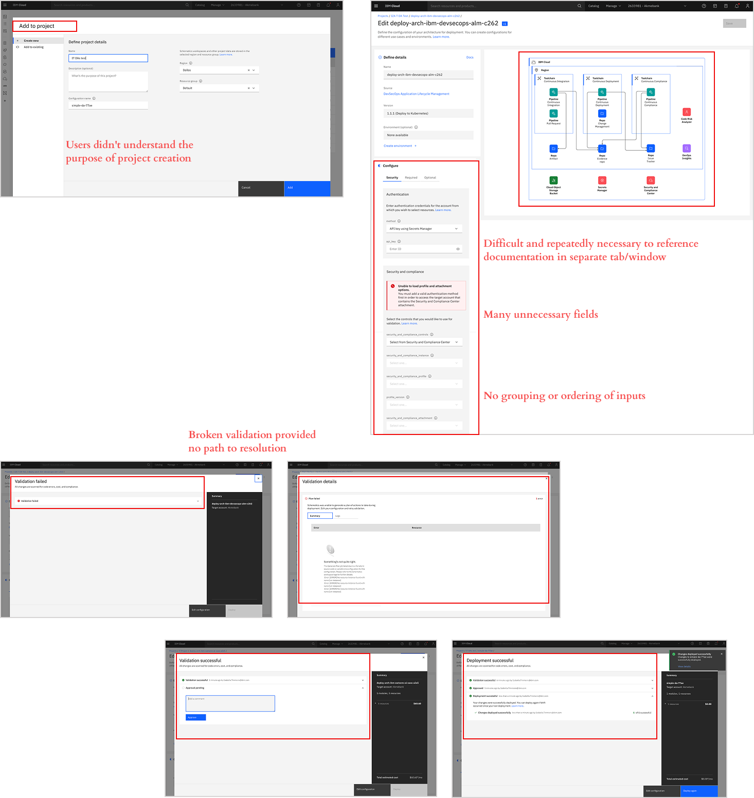
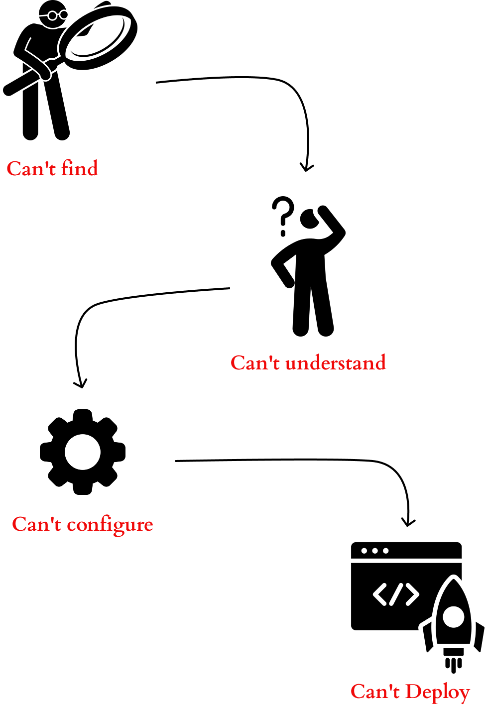
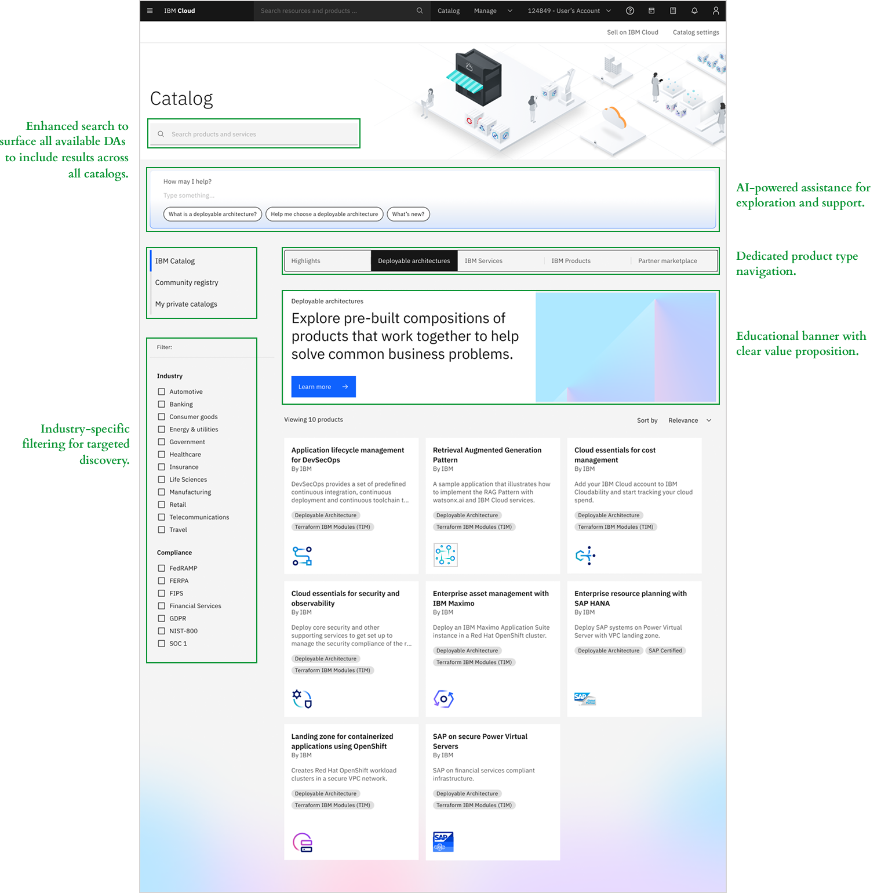
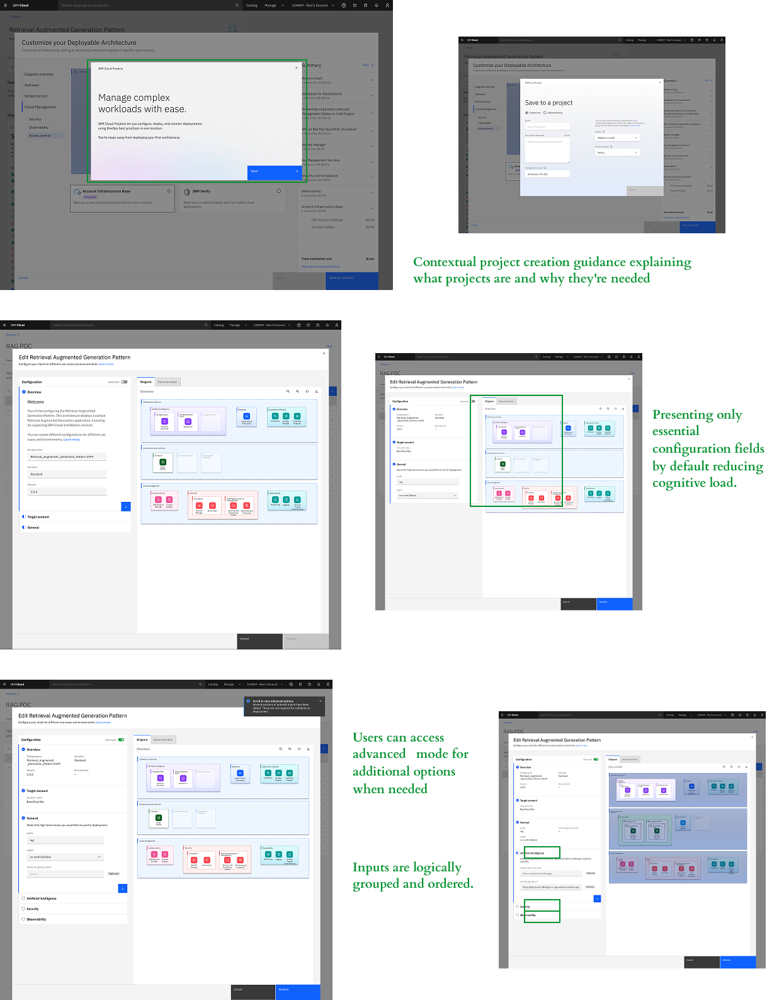
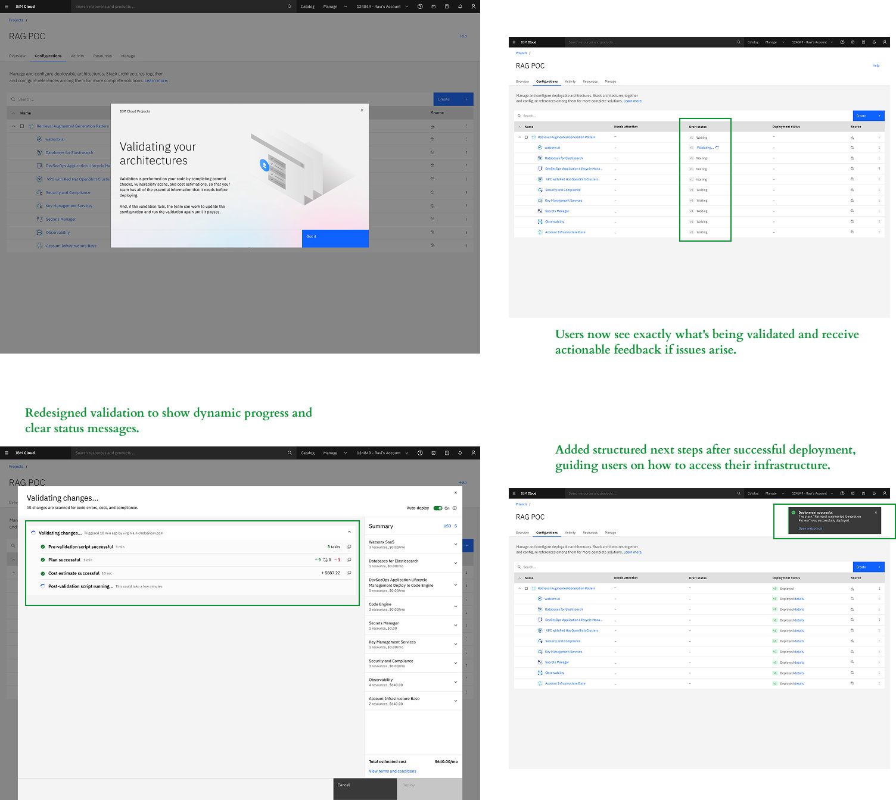

IBM Cloud's Deployable Architectures are pre-configured, automated infrastructure solutions designed to accelerate enterprise cloud deployment. They function as ready-to-use blueprints that package infrastructure code, configuration, and automation—enabling users to deploy entire environments following IBM's best practices for security, compliance, and reliability.
Problem
IBM Cloud's Deployable Architectures were designed to simplify complex infrastructure deployments, but users couldn't find them, understand their value, or successfully configure them—resulting in a 98.59% abandonment rate.
Technical users and IBM partners struggled at every phase: unclear terminology prevented discovery, overwhelming product pages blocked evaluation, and confusing configuration destroyed confidence.
Solution
Redesigned the end-to-end Deployable Architecture experience with dedicated catalog navigation, interactive architecture diagrams, transparent pricing, and guided configuration flows.
Created visual feedback systems and progressive disclosure patterns that reduced cognitive load while building user confidence. Achieved 63% growth in deployments and 81.25/100 satisfaction score.
⚠️ Confidentiality Notice: This case study has been modified to protect proprietary information. Specific metrics have been approximated and sensitive screenshots redacted in accordance with IBM NDA requirements.
My Role
- Lead Product Designer
Duration & Team
- 1 year
- Product Manager
- Researcher
- Developers
- Architect
Tools
- Figma
- Mural
- Slack
My role
As UX Design Lead, I synthesized findings from design reviews and user testing sessions, organizing insights by deployment phase to identify patterns and pain points across the user journey. I evaluated each issue's criticality, prioritized solutions based on user impact and business value, and collaborated with stakeholders and product managers to align on the redesign strategy.
I then owned the end-to-end design execution, leading the solution through multiple review cycles and validation testing to address systemic usability and information architecture issues.
Impact & Results
Deployment Growth
- 63% growth in DA deployments (2.46k → 4k events)
- Reduced drop-off from 98.59% to acceptable levels
User Confidence
- 81.25/100 satisfaction score
- 91.25% usability rating (highly usable and useful)
- 6.25/7 confidence score
Partner Ecosystem
- Increased external partner workflows to 49%
- Improved ability to add DAs to customer projects
- Validated configurations successfully
01
Research & Discovery
Research Process
Methods
- User interviews with 10 participants (engineers, developers, architects)
- Design reviews with 8 designers
- 6 usability testing sessions
Participants
- Tech Sellers (demos and quotes for clients)
- Solution Architects (evaluate technical requirements)
- Cloud Engineers (configure and deploy)
- Application Developers (consume infrastructure)
Goal
Identify critical pain points and drop-off moments throughout the Deployable Architecture user journey to enable strategic prioritization of solutions with the highest impact on user success.

Personas
Based on research with 10 participants, I created four personas representing our primary users across the deployment journey.
Alex T
Tech Seller
"I can't confidently walk a client through this deployment process. If I'm confused by the workflow, how can I expect them to trust it?"
Role
- Deploys IBM Cloud solutions for enterprise clients
- Bridges technical and business requirements
- Needs to demo, quote, and deploy DAs for customers
Goals
- Quickly configure DAs for client presentations
- Generate accurate quotes and timelines
- Deploy solutions confidently for paying customers
Frustrations
- Complex workflow made client demos difficult
- Couldn't confidently walk customers through deployment
- Lost deals due to perceived complexity
Josh R
Solution Architect
"The name 'Deployable Architecture' is too abstract. I need to know what it actually does before I can decide if it's relevant to my work."
Role
- Discovers, evaluates and recommends infrastructure patterns
- Balances technical requirements with business constraints
- Needs to understand architecture deeply before committing
Goals
- Quickly evaluate if a DA meets technical requirements
- Understand architecture components and how they connect
- Validate security and compliance features
Frustrations
- No quick way to understand DA architecture at a glance
- Had to dig through multiple pages to find technical details
- Couldn't confidently recommend DAs without extensive research
Maya C
Senior Cloud Engineer
"There's too much information in this architecture overview. I can't tell what's actually included versus what's optional or separate."
Role
- Responsible for deploying and maintaining production environments
- Works with tight deadlines and strict compliance requirements
- Familiar with Terraform and infrastructure-as-code
Goals
- Deploy secure, compliant infrastructure quickly and correctly
- Reduce manual configuration errors
- Ensure deployments meet Financial Services Cloud standards
Frustrations
- Couldn't find DAs in the catalog—unclear navigation
- Configuration options were overwhelming and unclear
- Validation process felt like a black box
Peter K
Application Developer
"I'm honestly afraid I'll configure something wrong and break the deployment. I wish it would just tell me what settings make sense for a basic app environment."
Role
- Needs infrastructure set up so he can deploy applications
- Prefers not to deal with low-level infrastructure details
- Works in fast-paced environment with tight deadlines
Goals
- Get a working cloud environment deployed quickly
- Minimal time spent on infrastructure configuration
- Deploy with confidence even without deep cloud expertise
Frustrations
- Felt overwhelmed by infrastructure terminology and options
- Configuration felt too technical and intimidating
- Afraid of making mistakes that would cause deployment failures
Envisioned User Journey
Alex T - Tech Seller
Discovers the DA in catalog, evaluates it for client needs, and adds it to a project to share with the technical team.
→ Hands off to Solution Architect
Josh R - Solution Architect
Reviews the architecture diagram and documentation to confirm it meets security, compliance, and technical requirements.
→ Hands off to Cloud Engineer
Maya C - Senior Cloud Engineer
Configures the DA with specific parameters (region, resources, sizing), validates the setup, and executes the deployment.
→ Hands off to Developer
Peter K - Application Developer
Receives the deployed cloud environment and begins building and deploying applications without needing to manage infrastructure.
Key Research Findings
Finding 1: Users couldn't find Deployable Architectures
"What is a Deployable Architecture? As a user, it doesn't directly speak to me." — Cloud Engineer participant
Key Issues:
- Unclear terminology — The term "Deployable Architecture" felt abstract and didn't align with how users searched
- No visual differentiation — Users couldn't distinguish DAs from regular IBM Cloud services
- Broken navigation and search — No efficient filtering, search didn't surface DAs appropriately
Impact: Significant drop-off between catalog visits and DA engagement validated that information architecture was preventing users from finding solutions.

Finding 2: Users couldn't confidently evaluate or understand DAs
"There's too much information in this architecture overview. I can't tell what's actually included versus what's optional." — Cloud Engineer
Key Issues:
- Unclear pricing and cost visibility — Users couldn't determine pricing variations or estimate total costs
- Hidden critical functionality — Important features were buried or difficult to discover
- Overwhelming information architecture — Dense content made it difficult to extract key details
Impact: Even motivated users couldn't confidently determine if a solution fit their needs, leading to decision paralysis.

Finding 3: Users couldn't complete deployments confidently
"I'm afraid I'll configure something wrong and break the deployment." — Application Developer
Key Issues:
- Missing contextual information — Users didn't understand why they needed to create a project
- Configure: Overwhelming information — Too many choices without clear indication of required vs. optional
- Broken validation experience — Unclear error messages, unpredictable timing, missing progress indicators
Impact: Only 1.41% successfully completed deployments due to compounding friction points.

The Problem
Powerful Solution, Invisible to Users
IBM Cloud's Deployable Architectures were designed to simplify complex infrastructure deployments into templated solutions. However, users couldn't find DAs in the catalog, understand their value proposition, or successfully configure them.
Broken User Journey Across Multiple Touchpoints
Technical users and IBM partners struggled at every phase: unclear terminology and poor search prevented discovery, overwhelming product pages blocked evaluation, and confusing configuration with unhelpful validation errors destroyed confidence.
Challenge: Redesign the end-to-end Deployable Architecture experience—from catalog discovery through configuration and deployment—to create a unified, intuitive workflow that enables users to confidently find, evaluate, and deploy infrastructure solutions independently.

User Needs
Discover and Evaluate Solutions
Users need to find Deployable Architectures when searching for infrastructure solutions
- Clear categorization by use case, industry, and compliance
- Use case-based naming aligned with user search behavior
- Effective filtering to narrow catalog options
- Visual differentiation from standard products
Product Page Evaluation
Users need to quickly assess whether a DA meets their technical, security, and business requirements
- Visual architecture diagram above the fold
- Components grouped by functionality
- "Best for" use case descriptions
- Transparent starting cost estimates
- Upfront Quickstart pricing
Configuration & Deployment
Users need to configure and deploy infrastructure independently with confidence
- Define requirements with visual clarity
- Modify and configure intuitively
- Validate and deploy with confidence
02
Design Solution
Solution 1: DA Discoverability
Redesigned the catalog experience to make Deployable Architectures easy to discover, understand, and evaluate at a glance.
Key Features:
- Organized catalog with dedicated product type navigation — Introduced distinct tabs for Software, Services, and Deployable Architectures
- Educational banner with clear value proposition — Added prominent banner explaining what DAs are and their benefits
- Enhanced search to surface all available DAs — Improved search algorithms to include results across all catalogs
- AI-powered assistance for exploration — Integrated AI chat prompt directly in the catalog
- Industry-specific filtering — Added industry filters for targeted discovery

Solution 2: Product Page Redesign
Redesigned the product page to provide instant visual understanding of architecture, transparent pricing, and clear differentiation between tiers.
Key Features:
- Interactive architecture diagram above the fold — Dynamic diagrams show all components at page top. Users click for details and switch tiers to see real-time visual updates
- Dynamic resource and pricing visibility by tier — Summary panel displays all resources with individual pricing. Switching tiers automatically updates costs and components
- Clear tier differentiation with "Best for" labels — Added contextual labels ("Best for: POC," "Production ready," "Most secure")
- Comparison table for evaluation — Side-by-side comparison shows what's included in each tier
- Guided architecture customization — Interactive customization flow where users select a base tier and add/remove optional components. Pricing updates in real-time and modified components highlight on the diagram

Solution 3: Deployment Experience
Simplified the deployment workflow with contextual guidance, progressive disclosure, and transparent validation feedback.
Key Features:
- Contextual project creation guidance — Added modal explaining what projects are and why they're needed for DA deployment
- Simplified configuration with progressive disclosure — Reduced cognitive load by presenting only essential configuration fields by default. Users can access advanced mode for additional options. Inputs are logically grouped and ordered, while the architecture diagram updates dynamically during configuration

Key Features (continued):
- Transparent validation with real-time feedback — Redesigned validation to show dynamic progress and clear status messages. Users now see exactly what's being validated and receive actionable feedback if issues arise
- Clear post-deployment guidance — Added structured next steps after successful deployment, guiding users on how to access their infrastructure and begin using their deployed environment

03
Validation & Results
Testing Results
I conducted usability testing with 8 participants (engineers, developers, and architects) to validate the redesigned experience across discovery, evaluation, and configuration.
Results: The redesigned experience achieved an 81.25/100 satisfaction score and 91.25% usability rating, with users successfully navigating from discovery through deployment without blocking issues.
What WOWed the Users
- Visual architecture diagram above the fold — Architects loved discovering the architecture diagrams. It instantly communicates what is in a Deployable Architecture and helps them decide faster than reading an explanation
- Automated resource provisioning — Architects loved Quickstarts because it would give them a fast, automated, and recommended way to start setting up their proof of concept or sandbox
- Dynamic architecture diagram updates — Architects were very enthusiastic about editing configurations and seeing it update the diagram. They found it straining to map the inputs in a separate list to the architecture
What Could Be Better
- Exportable and editable diagrams — Architects expected the ability to download diagrams as a PDF or editable format to edit it and include it in their documents or presentations to stakeholders or clients
- Knowing what can be modified or configured — From the product page, Architects wanted to know what they would be able to modify or configure about a solution (e.g., CPU and memory, logging and monitoring)
- Learning about components and products within — As they drill into an architecture and its components, Architects wanted to learn more about the products it will use, especially if they are new to IBM Cloud
Key Learnings
Visual feedback builds confidence in complex products
Real-time diagram updates and dynamic pricing weren't just nice-to-have features—they were critical to building user confidence. Users needed to see what they were building and understand cost implications immediately, not after deployment. This reinforced that for technical products, showing is more powerful than telling.
Progressive disclosure scales across skill levels
By presenting essential fields first with advanced options available on demand, we successfully served both novice developers and expert architects without compromising either experience. This approach can be applied across IBM Cloud's product portfolio to reduce cognitive load while maintaining power-user functionality.
Discovery problems cascade into adoption failures
Even the most well-designed configuration experience fails if users can't find the product. Fixing catalog navigation and search had equal impact to improving the deployment workflow itself. This taught me to always validate the entire user journey—not just the core feature—when redesigning enterprise products.
Early stakeholder alignment accelerates execution
Synthesizing research findings by deployment phase and prioritizing issues by impact enabled productive alignment with product managers and engineering early. This shared understanding of priorities reduced design iteration cycles and ensured the team focused on high-impact solutions first.